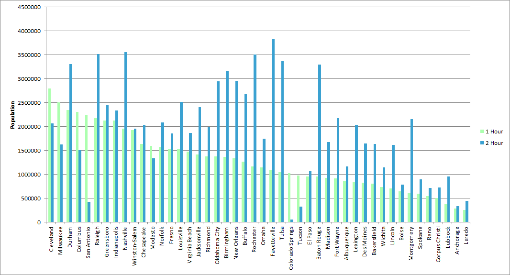
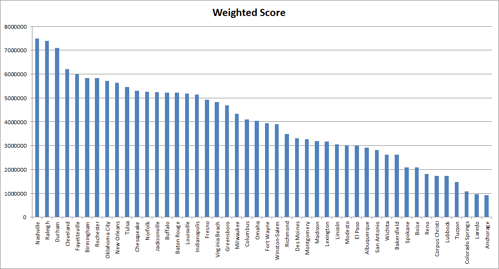

Louisville, Kentucky, has had IKEA rumors. An Insider Louisville article covering the topic was pessimistic claiming that the Louisville area woud not provide the population that the existing West Chester, Ohio location reaches. I wanted to put this to the test. Adapting a script for isochrone maps created by Drew Fustin, I was able to create a visualization of existing IKEA locations and their corresponding one and two hour drive times. Joining these isochrones with Census tracts gave populations located within these drive times. (2014 ACS used & tracts within range of multiple locations were joined to the closest location.)
As demonstrated below, measuring up to the wide reach of IKEA West Chester is a tall task.
Next, I wanted to compare potential IKEA locations in the US. I considered cities outside of existing 1 hour drive times with populations of at least 200,000, and created isochrone maps for the each city. I then measured three metrics- potential population new to a 2 hour drive time, population previously within a 2 hour drive that would potentially be within a 1 hour drive, and potential population new to a 1 hour drive time. I created a weighted score to determine the potential for new visits to IKEA scores- (2* new 1 hour drive population, 1* upgraded from 2 to 1 hour population, 1* new 2 hour population)
Potential added populations are shown below. (The 2 hour category includes the potential population within a 2 hour drive but outside a 1 hour drive.)


The calculated weighted scores reflect the potential for locations throughout the south. Cities in North Carolina, Nashville, Birmingham, and New Orleans were all among the highest scoring cities. Louisville possesses a fairly high score, but lags behind in the potential population that could be reached within a one hour drive.
-Nick Potter